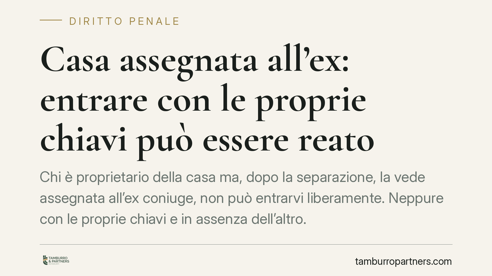

Casa assegnata all'ex: entrare con le proprie chiavi può essere reato
Chi è proprietario della casa ma, dopo la separazione, la vede assegnata all'ex coniuge, non può entrarvi liberamente. Neppure con le proprie chiavi e in assenza dell'altro. La linea della Cassazione penale è netta: l'assegnazione trasferisce il potere di escludere chiunque, e chi la ignora rischia una condanna per violazione di domicilio. Ecco cosa cambia e come muoversi.

Il punto: proprietà e godimento non coincidono
È una convinzione diffusa: «la casa è mia, ci entro quando voglio». Dopo una separazione con figli, questa idea può costare cara.
Quando il giudice assegna la casa familiare a uno dei due coniugi, chi resta formalmente proprietario perde il diritto di entrarvi a piacimento. Restano due situazioni distinte: la titolarità (chi possiede l'immobile) e il godimento protetto (chi ha diritto di abitarvi ed escludere gli altri).
Inquadramento normativo
L'assegnazione della casa familiare è disciplinata dall'art. 337-sexies del codice civile. Il provvedimento tiene conto prioritariamente dell'interesse dei figli e attribuisce all'assegnatario il diritto di abitare l'immobile, a prescindere da chi ne sia proprietario.
Da questo diritto discende lo ius excludendi alios: il potere di escludere chiunque altro dall'abitazione. È lo stesso potere che la legge riconosce a chi vive in un domicilio e che l'art. 614 del codice penale tutela con il reato di violazione di domicilio.
La Cassazione penale, in linea con un orientamento consolidato, ha chiarito che il coniuge proprietario non assegnatario che si introduce nella casa assegnata all'altro, o vi si trattiene contro la sua volontà, commette violazione di domicilio. L'art. 614 c.p. punisce infatti sia l'introdursi contro la volontà di chi ha diritto di escludere, sia il trattenersi dopo un divieto: entrambe le condotte sono rilevanti.
Due precisazioni importanti.
La prima: l'assenza dell'assegnatario non esclude il reato. La tutela riguarda il domicilio come spazio di riservatezza, non la presenza fisica della persona. Entrare quando l'ex è fuori casa non rende la condotta lecita.
La seconda: possedere le chiavi non attribuisce alcun diritto. Le chiavi sono un mezzo materiale, non un titolo giuridico. Chi le conserva dopo l'assegnazione non conserva anche il potere di usarle.
Il divieto di farsi giustizia da sé
C'è un secondo profilo penale da tenere presente. Chi ritiene di vantare un diritto sull'immobile — ad esempio recuperare oggetti personali o far valere la propria proprietà — non può agire di forza.
L'art. 392 del codice penale punisce l'esercizio arbitrario delle proprie ragioni: chi, potendo ricorrere al giudice, si fa giustizia da sé. Anche il proprietario che entra per «riprendersi ciò che è suo» può quindi rispondere penalmente, oltre che per violazione di domicilio.
Il principio è chiaro: un diritto, anche fondato, va fatto valere nelle sedi legali, non con l'iniziativa unilaterale.
Cosa cambia per chi si separa
Per il coniuge non assegnatario significa una cosa precisa: dal momento del provvedimento, l'accesso all'immobile passa dal consenso dell'altro. Non si tratta di un divieto assoluto e permanente, ma di un accesso che va concordato o autorizzato.
Per l'assegnatario, di contro, la tutela penale opera anche in sua assenza e anche verso il proprietario. Un ingresso non autorizzato è denunciabile.
Utile ricordare che la violazione di domicilio ex art. 614 c.p. è, nell'ipotesi base, procedibile a querela della persona offesa: senza querela dell'assegnatario, di norma, non si procede. Questo lascia margine a soluzioni concordate prima di arrivare al penale.
Cosa fare in concreto
- Concordare per iscritto ogni accesso. Se serve entrare per recuperare beni o per interventi tecnici, fissare data e modalità con l'ex, meglio via messaggio o email tracciabili.
- Restituire o non utilizzare le chiavi in mancanza di accordo. Il possesso materiale non equivale a un diritto d'ingresso.
- Non agire mai di forza per recuperare beni propri. Per gli oggetti personali si può chiedere l'autorizzazione o, in caso di rifiuto, rivolgersi al giudice.
- Documentare eventuali necessità legittime (manutenzioni urgenti, obblighi condominiali) e formalizzarle, così da poter dimostrare la buona fede.
- È opportuno rivolgersi a un legale prima di ogni iniziativa sull'immobile assegnato, per evitare condotte che espongono a responsabilità penale.
La regola di fondo è semplice: dopo l'assegnazione, la casa resta di proprietà ma non più nella disponibilità del proprietario. Chi lo dimentica rischia molto più di un dissidio familiare.
---
Contributo informativo a cura di Tamburro & Partners - Avv. Giuseppe Tamburro. Non costituisce parere legale.
Ogni condominio ha una storia a sé.
Se gestisci un'amministrazione e vuoi un confronto su una specifica questione condominiale, scrivi allo studio. Ti rispondiamo entro un giorno lavorativo.